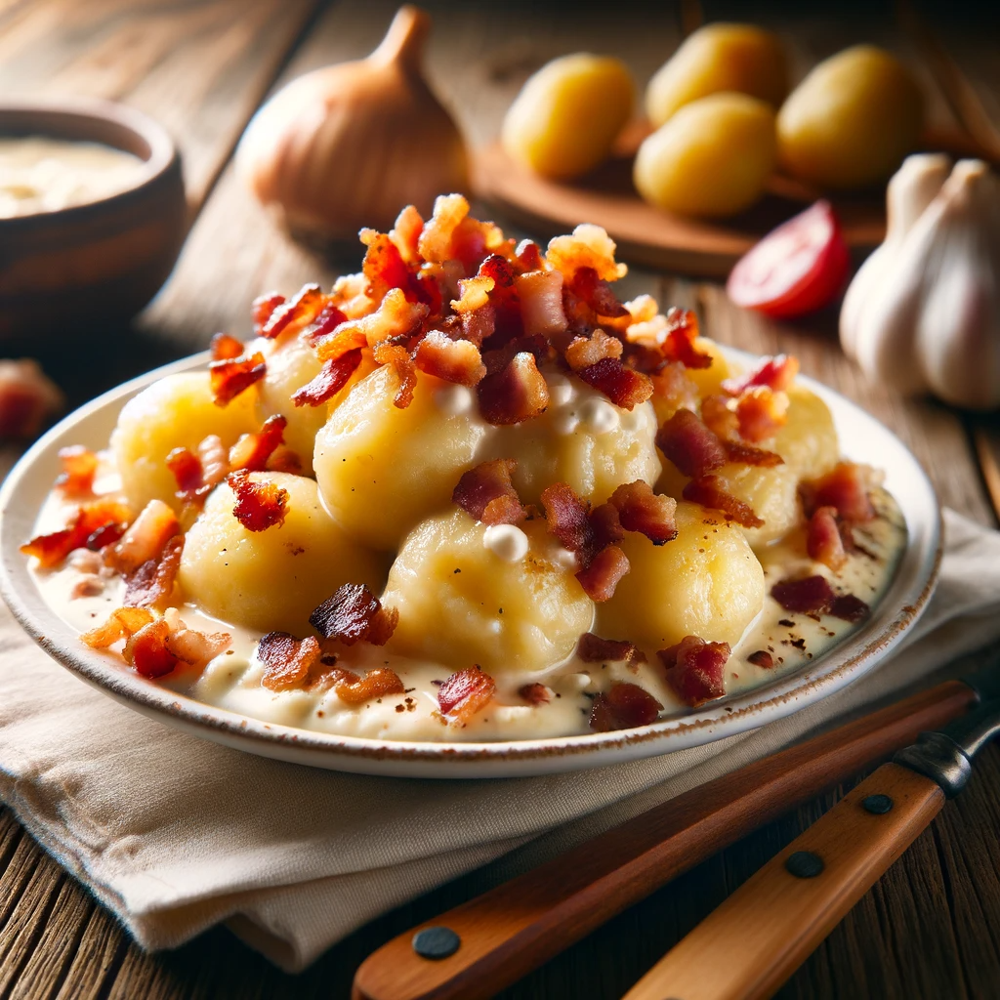

Bryndzové halušky
Tradičné slovenské jedlo s ovčím syrom a slaninou.

Ingrediencie
| Ingrediencia | Množstvo |
|---|---|
| Múka | 300 g |
| Voda | 150 ml |
| Soľ | 1 ČL |
Postup
Múku preosejeme do misky, pridáme soľ a vodu. Vypracujeme hladké cesto, ktoré necháme odpočinúť 30 minút.
Cesto si rozdelíme na 4 časti, z každej vyvaľkáme valček, ktorý nakrájame na 1 cm dlhé kúsky. Kúsky cesta vytvarujeme do tvaru halušiek.
V hrnci si pripravíme osolenú vodu, do ktorej vložíme halušky. Keď vyplávajú na povrch, necháme ich variť ešte 5 minút. Uvarené halušky scedíme a prelejeme studenou vodou.
Na panvici si opražíme slaninku, ktorú pridáme k haluškám. Halušky podávame s bryndzou.